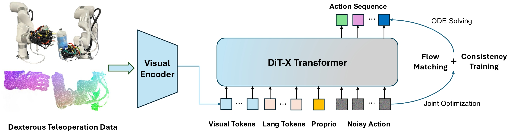

ManiFlow: A General Robot Manipulation Policy via Consistency Flow Training
ManiFlow performs diverse dexterous skills on humanoid and bimanual robot systems, generalizing to unseen objects and backgrounds.
All skills in videos are autonomous in 4x speed.
ManiFlow: A General Robot Manipulation Policy via Consistency Flow Training
We introduces ManiFlow, a visuomotor imitation learning policy for general robot manipulation that generates precise, high-dimensional actions conditioned on diverse visual, language and proprioceptive inputs.
We leverage flow matching with consistency training to enable high-quality dexterous action generation in just 1-2 inference steps.
To handle diverse input modalities efficiently, we propose DiT-X, a diffusion transformer architecture with adaptive cross-attention and AdaLN-Zero conditioning that enables fine-grained feature interactions between action tokens and multi-modal observations.
ManiFlow demonstrates consistent improvements across diverse simulation benchmarks and nearly doubles success rates on real-world tasks across single-arm, bimanual, and humanoid robot setups with increasing dexterity.
The extensive evaluation further demonstrates the strong robustness and generalizability of \ours to novel objects and background changes, and highlights its strong scaling capability with larger-scale datasets.
Overview of ManiFlow

ManiFlow is a visual imitation learning algorithm for dexterous robotic manipulation using Flow Matching with a consistency training objective, enabling efficient learning of high-dimensional dexterous behavior.
Our comprehensive evaluation spanning over 60 simulation tasks and eight real-world scenarios demonstrates ManiFlow's effectiveness,
particularly in challenging real-world bimanual dexterous manipulation across three different robot platforms, including Franka, bimanual Ability hands and Unitree H1 humanoid robot with Inspire hands,
where it achieves a 98.3% improvement over existing approaches in real-world.
These results establish ManiFlow as a promising foundation for complex robotic manipulation tasks.
Consistency Training
ManiFlow employs consistency training to improve the robustness and generalization of the learned policies. Below we demonstrate how consistency training helps the policy maintain stable performance across different scenarios.
Policy Generalization
Our policy demonstrates strong generalization capabilities across different objects and scenes. Below we showcase examples of how our policy generalizes to novel objects and environments.
Generalization to Unseen Objects
Humanoid Pouring
Pouring Task 1
Pouring Task 2
Pouring Task 3
Pouring Task 4
Pouring Task 5
Humanoid Grasping
Grasping Task 1
Grasping Task 2
Grasping Task 3
Grasping Task 4
Grasping Task 5
Grasping Task 6
Grasping Task 7
Grasping Task 8
Grasping Task 9
Bimanual Pouring
Bimanual Pouring Task 1
Bimanual Pouring Task 2
Bimanual Pouring Task 3
Bimanual Handover Task 4
Bimanual Grasping
Bimanual Grasping Task 1
Bimanual Grasping Task 2
Bimanual Grasping Task 3
Bimanual Grasping Task 4
Bimanual Grasping Task 5
Bimanual Grasping Task 6
Generalization to Unseen Scenes
Pouring in New Scenes
Scene 1
Scene 2
Scene 3
Scene 4
Grasping in New Scenes
Scene 1
Scene 2
Scene 3
Scene 4
Policy Robustness
ManiFlow demonstrates robustness to viewpoint changes, as shown in the following examples.
ManiFlow vs. π0
We evaluated several new objects. While Diffusion Policy, due to the use of Color Jitter augmentation, can occasionally handle some unseen objects, it does so with a very low success rate.
In contrast, iDP3 naturally handles a wide range of objects, thanks to its use of 3D representations.
π0
Training Scene Training Object & New Object
Training Scene New Object
Training Scene New Object
Training Scene New Object
ManiFlow
Training Scene Training Object & New Object
Training Scene New Object
Training Scene New Object
Training Scene New Object
π0
Training Scene Training Object & New Object
Training Scene New Object
Training Scene New Object
Training Scene New Object
ManiFlow
Training Scene Training Object & New Object
Training Scene New Object
Training Scene New Object
Training Scene New Object
π0
Training Scene Training Object & New Object
Training Scene New Object
Training Scene New Object
Training Scene New Object
ManiFlow
Training Scene Training Object & New Object
Training Scene New Object
Training Scene New Object
Training Scene New Object
Conclusions
In this work, we introduce ManiFlow, a robust and efficient dexterous manipulation model. ManiFlow improves upon prior flow matching policies by introducing a continuous-time consistency training objective, a superior time sampling strategy, and a novel DiT-X block. The proposed DiT-X architecture effectively handles diverse input modalities through its dual conditioning mechanisms, enabling strong performance across varied manipulation tasks. Our comprehensive evaluation spanning 60 simulation tasks and 8 real-world scenarios demonstrates ManiFlow's effectiveness, particularly in challenging real-world bimanual dexterous manipulation, where it achieves a 98.3\% relative improvement over existing approaches.
Limitations
(1) Teleoperation with Apple Vision Pro is easy to set up, but it is tiring for human teleoperators, making imitation data hard to scale up within the research lab.
(2) The depth sensor still produces noisy and inaccurate point clouds, limiting the performance of ManiFlow.
(3) Collecting fine-grained manipulation skills, such as turning a screw, is time-consuming due to teleoperation with AVP; systems like Aloha are easier to collect dexterous manipulation tasks at this stage.
(4) We avoided using the robot's lower body, as maintaining balance is still challenging due to the hardware constraints brought by current humanoid robots.
In general, scaling up high-quality manipulation data is the main bottleneck. In the future, we hope to explore how to scale up the training of 3D visuomotor policies with more high-quality data and how to employ our 3D visuomotor policy learning pipeline to humanoid robots with whole-body control.
Hardware
Cross-platform Generalizability
Here are the hardware components used in this work:
BibTeX
@article{Yan2025ManiFlow,
title = {ManiFlow: A Dexterous Manipulation Policy via Flow Matching},
author = {Ge Yan and Jiyue Zhu and Yuquan Deng and Shiqi Yang and Ri-Zhao Qiu and Xuxin Cheng and Marius Memmel and Ranjay Krishna and Ankit Goyal and Xiaolong Wang and Dieter Fox},
year = {2025},
journal = {arXiv preprint arXiv:}
}